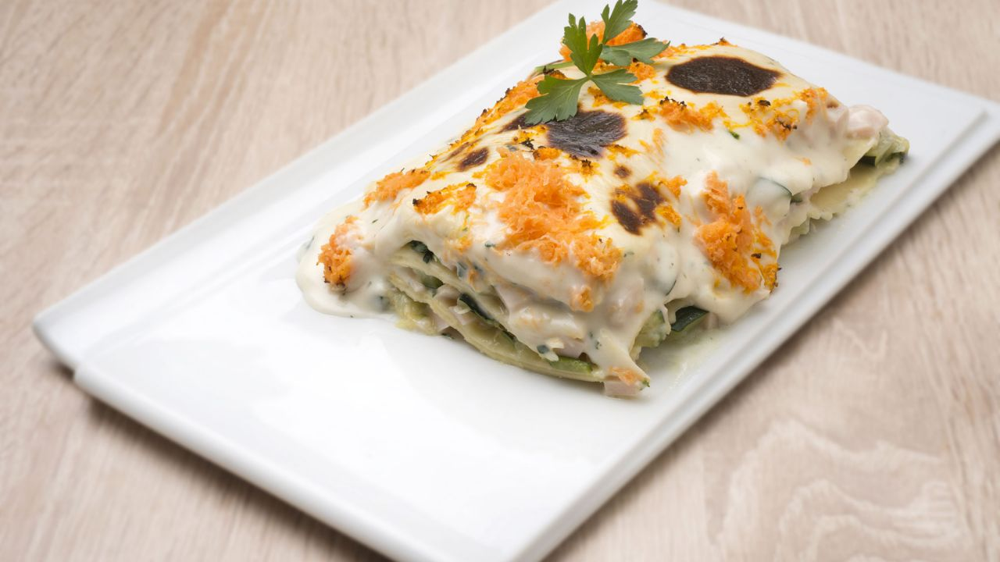

Principales
Salmón con salsa de cítricos
Ingredientes (4 personas)
- 800 g de salmón
- 2 limas
- 2 pomelos rosas
- 3 chalotas
- 1 calabacín
- 100 g de dulce de membrillo
- 85 g de requesón
- 15 g de mantequilla
- harina de maíz refinada
- aceite de oliva virgen extra
- sal
- pimienta
- hierba luisa
Elaboración
- Para preparar la salsa de cítricos, exprime 1 lima y 1 pomelo. Pon los jugos en una cazuelita y vierte la misma cantidad de agua. Pica las chalotas finamente y añádelas. Pon al fuego y deja que reduzca durante 8-10 minutos. Agrega la mantequilla y un poco de harina de maíz refinada diluida en agua fría. Mezcla bien. Pica unas hojas de hierba luisa y añádelas. Reserva la salsa. Pela la otra lima y el otro pomelo, saca los gajos en vivo y resérvalos.
- Lava el calabacín y con ayuda de una mandolina, corta 8 lonchas largas y finas. Escalda las tiras de calabacín durante 20 segundos en una cazuela con agua hirviendo. Retira y escúrrelas en papel absorbente.
- Aplasta el membrillo con un tenedor y ponlo en un bol. Deshaz el requesón, añádelo y mezcla todo bien. Coloca de 2 en 2 las láminas de calabacín formando una cruz. Sazona. Pon en el centro una pequeña porción de la mezcla de queso y membrillo y envuélvelos como si fueran paquetitos. Cocina los paquetes de calabacín rellenos a la plancha.
- Limpia y corta el salmón en 4 lomos. Salpimienta y cocínalo a la plancha.
- Sirve la salsa en el fondo de los platos, coloca encima el salmón y los paquetitos de calabacín. Adorna con los gajos de lima y de pomelo.
- Espolvorea con unas hojas de hierba luisa picaditas.

Tacos de pan árabe
Ingredientes (4-6 personas)
- 2 filetes de vaca
- 4 lonchas de panceta
- 8 champiñones
- 1 cebolleta
- 1 chile verde
- 1 diente de ajo
- 2 lonchas de queso gouda
- aceite de oliva virgen extra
- sal Para hacer el pan árabe:
- 250 gr de harina
- 50 gr de harina integral
- 1 cucharada de azúcar moreno
- 2 gr de levadura de panadero seca
- 150 ml de agua
- aceite de oliva virgen extra
- sal
- za´atar
- harina para estirar
Elaboración
- Para hacer los panes árabes, mezcla en un bol la harina, la harina integral, la levadura, el azúcar y una pizca de za´atar. Haz un hueco en el centro, vierte el agua, un chorrito de aceite de oliva y sal.
- Mezcla los ingredientes primero con una espátula y luego amasa con la mano hasta que quede una masa homogénea.
- Pásalo a una superficie lisa, riega con un poco más de aceite y sigue amasando hasta que no se pegue en las manos. Forma una bola, cubre con un paño y deja que fermente durante 1 hora.
- Prepara un aceite de za´atar, mezclando una cucharada de za´atar con un buen chorro de aceite de oliva.
- Estira la masa sobre una superficie lisa con un rodillo y espolvoreando un poco de harina. Forma unas bolas y estíralas formando unas obleas finas. Introduzca una a una en el horno a máxima temperatura (encendido previamente) y espera a que suflen y se tuesten ligeramente.
- Retira y unta con el aceite de za´atar.
- Para los tacos, sazona los filetes y cocínalos en una sartén a fuego vivo con un chorrito de aceite de oliva.
- Retira los filetes y agrega el ajo y la panceta picados.
- Cuando empiecen a dorarse añade la cebolleta, el chile y los champiñones, todo picado.
- Sazona y saltea el conjunto. Trocea y agrega los filetes al salteado junto con el queso. Mezcla y espera que se funda.
- Calienta brevemente los panes árabes en el horno y sirve el salteado en el centro de cada pan para formar los tacos.

Lasaña de espinacas, pavo y calabacín
Ingredientes (6-8 personas)
- 16 láminas de lasaña
- 350 gr de pechuga de pavo cocido
- 2 calabacines
- 1 zanahoria
- 1 cebolleta
- 2 dientes de ajo
- 250 gr de espinacas
- 750 ml de leche
- 60 gr de harina
- aceite de oliva virgen extra
- sal
- pimienta
- perejil
Elaboración
- Pela y pica los ajos y la cebolleta. Ponlos a pochar en una sartén con un chorrito de aceite.
- Pica el calabacín en trocitos y añádelos.
- Finalmente pica las espinacas y agrégalas.
- Sazona y añade el pavo cortado en daditos. Reserva.
- Pon abundante agua a calentar en una tartera.
- Sazona y cuando empiece a hervir, añade las hojas de lasaña. Cuécelas el tiempo que indique el paquete. Escúrrelas sobre un trapo seco.
- Pon una capa de pasta en el fondo de una fuente apta para el horno. Cúbrela con una capa de verduras, otra capa de pasta, otra de verduras y finalmente otra de lasaña.
- Pon un poco de aceite en una cazuela, agrega la harina y rehógala un poco. Vierte la leche poco a poco y remueve bien.
- Cocínala durante 6-8 minutos. Salpimiéntala y añade perejil picado.
- Mezcla y cubre la fuente de la lasaña. Ralla encima la zanahoria y gratínala en el horno durante 5-6 minutos.
- Decora con una ramita de perejil y sirve.

Paella de pescado y marisco
Ingredientes (6-8 personas)
- 400 gr de arroz
- 1 l de caldo para paella
- 150 gr de gambas
- 300 gr de rape
- 1/2 kg de mejillones
- 1 pimiento verde
- 1/2 pimiento rojo
- 1 tomate
- 2 dientes de ajo
- aceite de oliva virgen extra
- sal
- azafrán
- perejil
Elaboración
- Pon a calentar un poco de aceite en una paella. Pela las gambas, sazónalas y agrégalas a la paella.
- Saltéalas y retíralas a un plato.
- Corta el rape en dados, sazona y rehógalos en la paella.
- Retíralos a un plato.
- Limpia bien los mejillones y colócalos en una cazuela con agua.
- Coloca la tapa y deja que se abran. Resérvalos.
- Pela y pica los ajos y añade a la paella donde has rehogado el rape y las gambas.
- Pica los pimientos, agrega y póchalos. Añade las hebras de azafrán y el tomate rallado.
- Incorpora el arroz, rehógalo un poco y vierte el caldo.
- Añade el rape y las gambas y deja cocinar durante 18-20 minutos.
- Apaga el fuego y añade los mejillones.
- Decora con una hojita de perejil y sirve.
Pasta fresca con hongos
Ingredientes (2 personas)
-
Para la pasta:
- 250 gr de harina
- 3 huevos
- aceite de oliva
- sal
- pimienta
- harina para estirar la Para la salsa:
- 2 hongos frescos
- 50 gr de hongos secos
- 1 chalota
- 2 tomates secos
- 1 trozo de queso pecorino romano
- 100 ml de nata
- 1 vaso de vino blanco
- mantequilla
- sal
- cristales de sal ahumada
- pimienta
- tomillo
Elaboración
- Para la pasta, pon en un bol la harina, los huevos, un chorro de aceite de oliva, sal y pimienta.
- Mezcla bien y amasa con las manos hasta obtener una masa homogénea.
- Deja que repose durante 1 hora aproximadamente.
- Después, enharina una superficie limpia y estírala con un rodillo.
- Enróllala, enharinando bien el interior para que no se pegue y córtala en forma de fetuccini con el cuchillo.
- Suelta la pasta con los dedos.
- Pon en un cazo la chalota picada con el vino blanco y los tomates deshidratados.
- Deja que el vino reduzca casi completamente y que se hidraten los tomates y entonces añade los hongos secos y la nata.
- Sazona y cocina durante 5 minutos aproximadamente. Agrega las puntas de los tallos de los hongos frescos bien picados y sigue cocinando. Tritura, cuélala, añade un poco de mantequilla y una pizca de pimienta y bate con la varilla.
- Corta los hongos frescos en láminas de medio centímetro, sazónalos con cristales de sal ahumada y ponlos en un plato.
- Mójalos con un chorrito de vinagreta.
- Cuece la pasta en una cazuela con agua hirviendo y sal durante 2 minutos.
- Escurre y pásala (muy húmeda) a una sartén. Incorpora la salsa y mezcla bien. Ralla queso pecorino por encima y menea la sartén. Emplata la pasta sobre los hongos frescos. Espolvorea con tomillo fresco y sirve.

Rollitos de salmón y aguacate
Ingredientes (2 personas)
- 8 filetes de salmón ahumado
- 1 aguacate
- 1/2 limón
- vinagre de Módena
- aceite de oliva
- sal
- cebollino
Elaboración
- Tritura el aguacate con unas gotitas de zumo de limón.
- Sazona y riega con un chorrito de aceite de oliva.
- Introduce todo en una manga pastelera.
- Enrolla los filetes de salmón ahumado y rellénalos con el aguacate. Espolvorea con cebollino picado.
- Decora el plato con unas gotitas de aceite y de vinagre y pon encima los rollitos.
- Acompaña con unas rodajitas de limón.

Intxaursalsa, crema de nueces tradicional vasca
Ingredientes (4 personas)
- 500 gr de nueces
- 6 cucharadas de azúcar
- 1,5 litros de leche
- hoja de menta (para decorar)
Elaboración
- Casca las nueces y saca el fruto. Colócalas en un paño y tritúralas dándoles golpes suaves con un mazo de madera.
- Calienta la leche en una cazuela.
- Añade el azúcar y las nueces y deja cocer todo a fuego lento durante 60-70 minutos, removiendo de vez en cuando.
- Retira del fuego y deja que se temple.
- Decora con unas hojas de menta y sirve.
- Puedes tomarla fría, templada o caliente, según tu gusto.